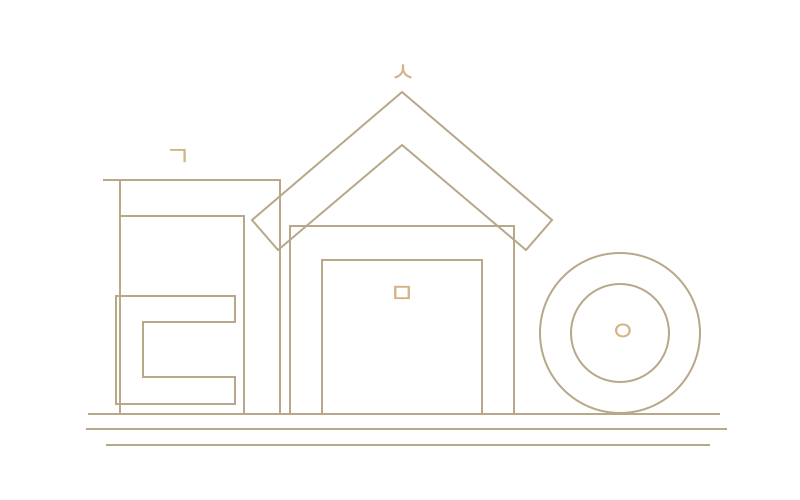

한글의 선으로
공간을 짓다.
ㄱ은 기둥과 처마로, ㅅ은 지붕으로.
익숙한 글자가 건축이 되는 전시입니다.
한글 건축관
아래로 스크롤해 여섯 공간을 만나보세요.
A HOUSE OF HANGUL
전시관의 문을 열고 있습니다.

3D 전시를 준비하고 있습니다.
ㄱ은 기둥과 처마로, ㅅ은 지붕으로.
익숙한 글자가 건축이 되는 전시입니다.
한글 건축관
아래로 스크롤해 여섯 공간을 만나보세요.
스크롤로 만나는 여섯 개의 전시 공간입니다. 3D를 열 수 없어도 글자의 형태와 전시의 의미를 읽을 수 있습니다.
ㄱ의 가로선은 처마가 되고, 세로선은 그 아래의 공간을 받칩니다. 석회암의 무게와 선의 방향을 함께 감상합니다.
ㅇ의 가운데를 비우자 창이 생깁니다. 청동의 둥근 틈 너머로 물과 빛이 이어지고, 비워 둔 곳에 풍경이 담깁니다.
ㅁ의 네 방향이 하나의 방을 만듭니다. 가운데를 열면 누구나 드나드는 입구가 됩니다. 닫힌 글자가 열린 공간으로 바뀝니다.
ㅎ의 짧은 선과 둥근 형태를 나누어 봅니다. 황동의 표면과 틈마다 다른 방향의 빛이 닿습니다.
ㅏ의 곧은 선은 기둥이 되고, 옆으로 뻗은 선은 정원으로 향하는 길이 됩니다. 식물의 유연한 선과 금속의 곧은 선을 비교합니다.
서로 기대는 ㅅ의 두 선. 기울어진 획 아래에 사람이 머물 자리가 생깁니다. 지붕과 글자가 공유하는 형태를 발견해보세요.
입구가 된 ㅁ, 지붕이 된 ㅅ, 창이 된 ㅇ. 세 조각을 직접 옮겨 집 한 채를 지어보세요.